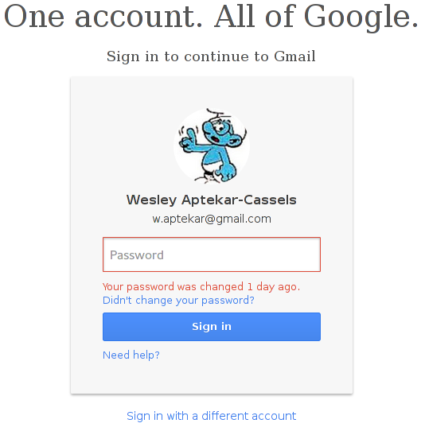
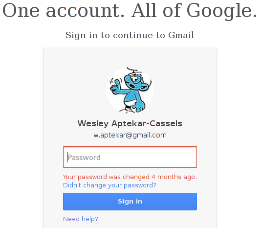

When you change your Google password, what happens? One would expect that your password gets updated, and everyone's happy. The reality, however is quite different. Google stores your old password, and updates your current password. This allows them to do cool things like remind you that you just changed your password if you type in your old one.

And not-so-cool things like keeping your password for ever and ever:

Not only do they keep a record of your last password, but they also keep a record of every password you've ever had.
Why is this bad?
Let's take a look at some reasons that you would want to change your password:
- Routine password change.
- Someone knows your old password.
- You saw someone looking over your shoulder while you were typing in your password.
In case 1, Google knowing your old password isn't a very big deal. It's changed, and you're security conscious, so your Google password isn't the same as any of your old passwords.
In case 2, we can assume that you suck at security. Most likely your Google password is also your password for some other sites, since it's too hard to remember a bunch of different passwords. In this case, it lets the attacker know what your old password is, and since you probably also have the same password on other sites, giving confirmation can be a bad idea. In addition, people probably used their GMail to sign up for said other sites, giving the attacker both an email and a possible password.
Case 3 is even worse. Chances are whoever was looking over your shoulder didn't see your password fully, just how many characters it had and some of the characters in it. This will allow them to keep brute-forcing the password after you change it, and perform the same attack as in case 2.
Those are all minor things compared to the big problem though. In Google's password recovery, the first thing they ask is "Enter the last password you remember." For me, the next thing it does is sends me a text with a verification code. But what if I hadn't given Google my phone number? Well, why don't we create a fake account to test it?
The Steps:
- Go to Google password recovery.
- Check the box labeled "I forgot my password."
- Enter the victims email address.
- Enter the password you got from the "Your password was changed X ago." login hack.
- Enter your email address (I used my gmail for this, so I don't know if it'll throw you out for using sharklasers.com or something.)
- Enter the old password that you know.
- Enter the current date - The amount of time that it said in the "Your password was changed X ago." prompt.
- Now you need to know when they signed up with Google, accurate to a month. I'm not sure how to get this, but it might be publicly available somewhere.
- Press continue.
- Press "Reset Password"
Seem a bit insecure to you?
Yes, I know that there are steps around this.
iving Google your phone number, not logging in from public places, and other common sense things like that. But the fact is that Google shouldn't be storing my old password for more than a week or so, so that it can remind me that I changed it if I type in my old one. Google should also take out the time that you changed your password. There is no reason that it needs to be there, and it just helps password "recovery" by attackers.
Although trusting Google with anything more than data that you don't care if anyone else sees is just plain stupid.
This is my Google rant, until something else stupid happens.